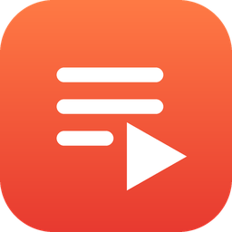

PlaylistRemote
Control Spotify on your phone from your Garmin watch.
What it does
- Shows your playlists and starts the one you choose with a button.
- Play/pause, next and previous track.
- Shows the song and the artist that are playing.
- Big text, high contrast, black background: designed to be used while running.
What you need
- A Spotify Premium account (Spotify allows playback control only with Premium).
- The Spotify app on your phone, with an internet connection.
- A compatible Garmin watch connected to the Garmin Connect app.
How to start
- Install PlaylistRemote from the Connect IQ store.
- On your phone, open Spotify.
- On the watch, open PlaylistRemote and press START.
- A page opens on your phone: choose "I have an invite" if the creator added you, otherwise follow the 3 steps to use your own Spotify app (about 2-3 minutes, only once).
- Sign in to Spotify. Done: the watch shows the song that is playing.
Buttons
STARTPlay / pause
UPNext track
DOWNPrevious track
HOLD UPPlaylist list
BACKExit
Good to know
When music is paused and Spotify is not open on screen, the phone puts Spotify to sleep after a few seconds. To start again after a long pause, press play on the phone or use the Garmin music controls; the watch reconnects by itself.
PlaylistRemote is an independent app and is not affiliated with, endorsed or sponsored by Spotify. Spotify is a trademark of Spotify AB. Garmin and Connect IQ are trademarks of Garmin Ltd. or its subsidiaries.